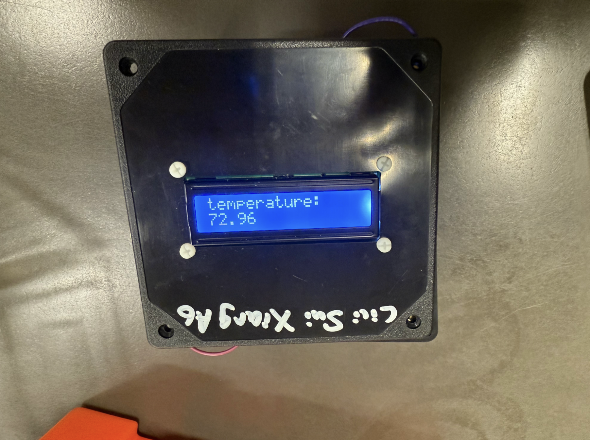
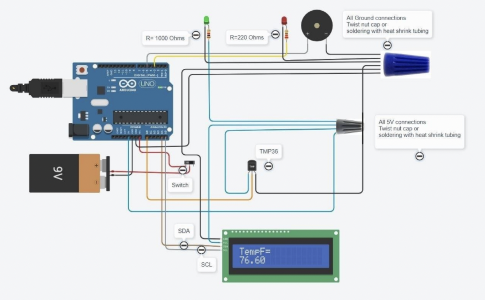
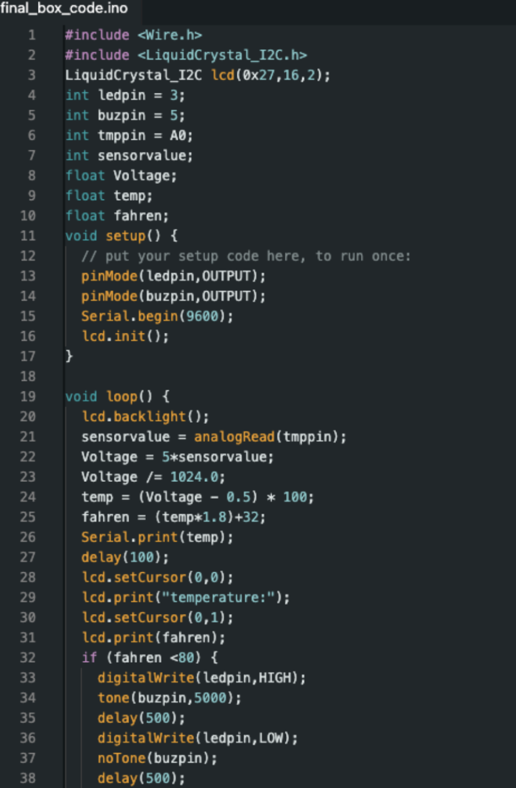
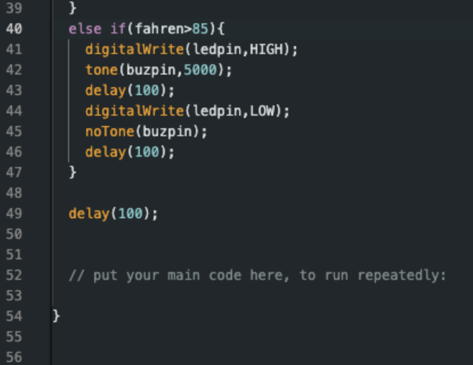
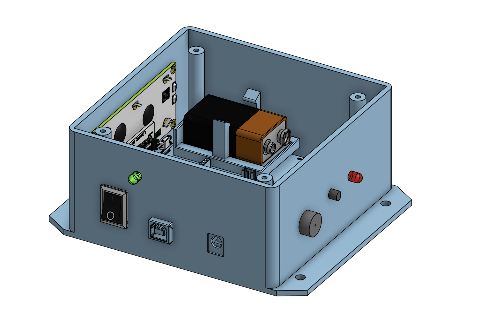
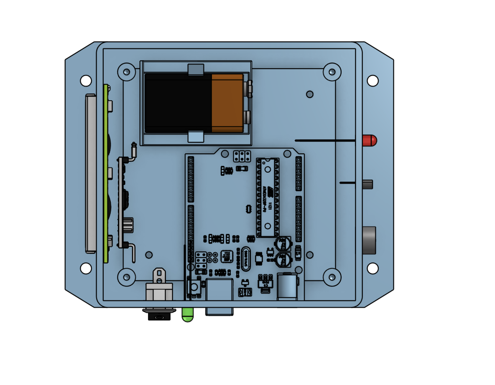
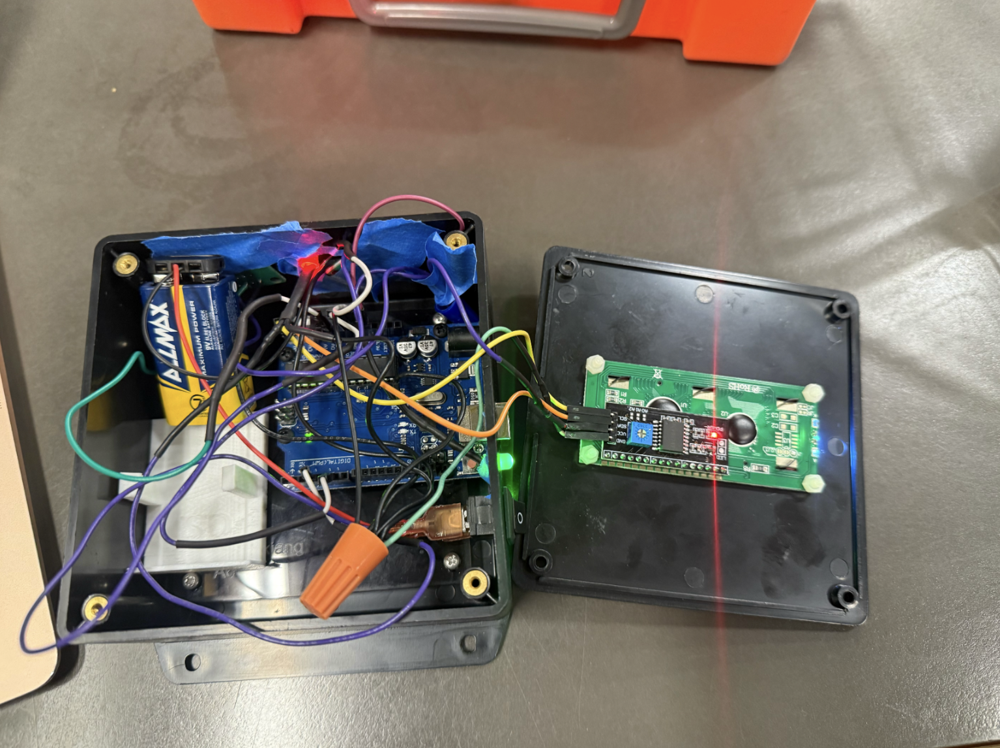

EMBEDDED SYSTEMS · FALL 2025
Temperature Monitoring System
Arduino-Based Temperature Monitoring & Alert Device
EK131 Introduction to Engineering
Boston University
Arduino · C++ · CAD · Electronics

01 / PROJECT OVERVIEW
Real-Time Temperature Monitoring
This project involved designing and building a portable, Arduino-based temperature monitoring device capable of measuring ambient temperature and providing both visual and audible feedback.
The system uses a TMP36 analog temperature sensor to continuously monitor the surrounding environment. Temperature measurements are processed by an Arduino Uno and displayed in Fahrenheit on a 16×2 LCD screen.
A green LED indicates that the device is powered on, while a red LED and piezo buzzer activate when the measured temperature exceeds the programmed safe range. The system is powered by a 9V battery and enclosed in a compact ABS housing.
TMP36
Temperature Sensor
16×2
LCD Display
9V
Battery Supply
80–85°F
Programmed Alert Limits
02 / ELECTRICAL DESIGN
Circuit Architecture & Component Integration
The electrical system is centered around an Arduino Uno R3 microcontroller, which reads analog voltage signals from the TMP36 sensor and controls the display and warning indicators.
The TMP36 sensor is connected to analog input A0. Its output voltage is converted into a temperature measurement through software.
An I2C interface is used to communicate with the LCD display, reducing the number of connections required between the display and microcontroller.

Electronic Components
Electrical Integration
The Arduino provides regulated 5V power to the electronic components. The green LED functions as a power indicator, while the red LED and buzzer provide temperature warnings.
A combination of jumper wires and 22 AWG solid-core wire was used for electrical connections. Solid-core wire was selected for permanent connections because of its greater mechanical durability.
03 / SOFTWARE DEVELOPMENT
Arduino Programming & Temperature Control
The system was programmed using Arduino C++. The software continuously reads the analog output of the TMP36 sensor, converts the voltage into temperature, and updates the LCD display.
The temperature conversion uses the TMP36 sensor's voltage offset and temperature sensitivity.
Temperature Conversion
Vsensor = Analog Reading × (5V / 1024)
T°C = (Vsensor − 0.5V) × 100
T°F = (T°C × 1.8) + 32
Temperature Alert Logic
The program compares the measured temperature against predefined thresholds.
When the temperature falls below 80°F or rises above 85°F, the red LED and buzzer activate to alert the user.
The LCD continuously displays the current temperature in Fahrenheit, allowing the user to monitor environmental conditions.
Arduino Source Code


04 / MECHANICAL DESIGN
Enclosure Design & CAD Modeling
A compact ABS enclosure was used to house the Arduino, battery, wiring, and electronic components.
The enclosure was designed to provide external access to the power switch, LCD display, temperature sensor, LED indicators, and buzzer while protecting the internal circuitry.
CAD modeling was used to plan component placement, mounting locations, and enclosure openings before assembly.


Enclosure Dimensions
146.5
Width (mm)
119.8
Length (mm)
57.2
Height (mm)
ABS
Enclosure Material
05 / FINAL PROTOTYPE
Hardware Assembly & Integration
The final prototype integrates the Arduino Uno, TMP36 sensor, LCD display, power supply, and alert components within the ABS enclosure.
The LCD is mounted externally for easy temperature monitoring, while the internal components are secured within the enclosure.

06 / ELECTRICAL CALCULATIONS
LED Current & Power Supply Analysis
Current-limiting resistors were selected to prevent excessive current through the LED indicators.
Using Kirchhoff's Voltage Law and Ohm's Law, the LED current can be estimated as:
I = (Vsupply − VLED) / R
Green LED — 1 kΩ Resistor
I = (5V − 2V) / 1000Ω
I = 0.003A = 3mA
Red LED — 220 Ω Resistor
I = (5V − 2V) / 220Ω
I ≈ 0.0136A = 13.6mA
Both resistors limit the LED current while maintaining sufficient brightness for visual indication.
Battery Power
A 9V battery was selected to provide portable power through the Arduino's onboard voltage regulator.
The report estimates a typical battery capacity of approximately 500–600mAh. Actual operating time depends on the total current drawn by the circuit.
Battery Life (hours) ≈ Battery Capacity (mAh) / Current Draw (mA)
External USB or DC adapter power can also be used for extended operation.
07 / RESULTS & EVALUATION
Project Outcomes
The completed temperature monitoring system successfully demonstrated real-time temperature measurement, LCD output, and automated visual and audible temperature warnings.
The project combined embedded programming, analog sensor processing, electrical circuit design, and mechanical enclosure integration into a functional portable device.
Engineering Challenges
The primary design limitations included battery life and the available space inside the enclosure.
Component placement and wiring organization were important considerations during assembly.
Future Improvements
Future iterations could incorporate a more efficient power supply, improved internal wiring organization, and a smaller enclosure to increase portability.